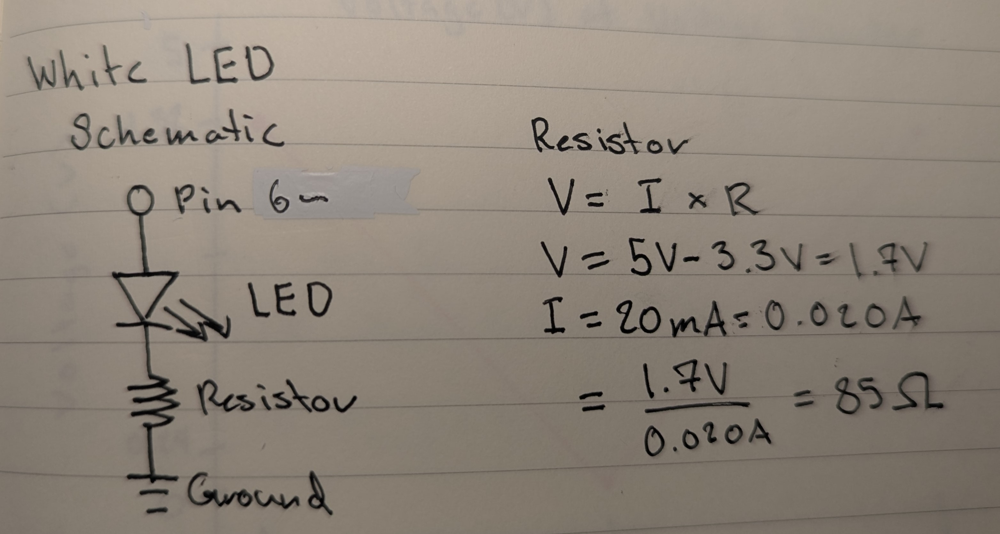
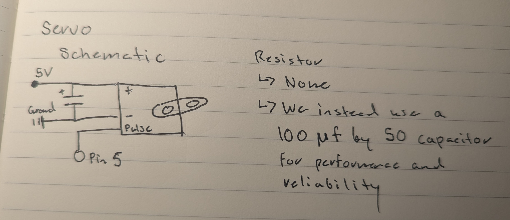
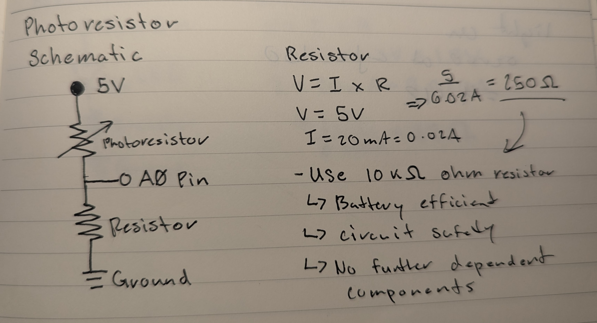

Schematics & Resistors

The White LED has a voltage drop of 3.3V. Since the White LED
requires more power, the resistance is lower, as shown in the
calculations, which only require 85 ohms of resistance. However,
we use the closest resistor value available, which is the
100-ohm resistor.

For the servo schematic, it is connect to its respective PWM pin
(pin 5) in order to be given a PWM signal of 0-255 by the photoresistor.
Furthermore, is also being connected to a 5V track and ground
provided by the Arduino.

For the photoresistor schematic it is connected to the 5V rail in
order to always receive a constant source of power for the photoresistor,
which is then read via an analog pin inside the voltage divider. As we are
simply reading an analog signal from the photoresistor, we use a 10k-ohm
resistor in order to ensure the circuit is both safe and energy efficient.
Voltage Divider
In the voltage divider circuit, the measured voltage changes depending on the state of
the photoresistor. When the light is off, the servo is at angle 0, and the voltage at
the divider is 0.40V as measured with a multimeter. When the light is on, the servo moves
to angle 180, and the voltage at the divider increases to 4.42V. These readings demonstrate
the circuit's response to the photoresistor's role in controlling the voltage divider output
and dynamically adjusting the servo's position based on light conditions. Additionally,
when there is no light on the photoresistor, the LED is on, and when light is present,
the LED turns off, providing visual feedback that complements the servo's motion.
Code Structure
/*
Octavio Badillo
1/27/2025
A program that calibrates a photoresistor and dynamically controls the position
of a servo motor and the brightness of two LEDs on a breadboard based on the photoresistor's readings.
The program recalibrates the sensor range if the input deviates from a specified allowed margin of
error. Additionally, an LED is dynamically turned on whenever the photoresistor's readings reach the
calibrated maximum sensor value.
*/
#include // Servo library
// Constants
const int servoPin = 5; // Servo signal pin
const int whiteLED = 6; // White LED pin
// Variables
int timer = 500; // Delay time between readings during calibration
int sensorMax = 0; // Maximum sensor value during calibration
int sensorMin = 1023; // Minimum sensor value during calibration
int errorMargin = 100; // Margin of Error for calibration
Servo servo; // Servo object to control the servo motor
// Function to calibrate the sensor by finding min and max values
void calibration() {
sensorMin = 1023; // Reset sensorMin to highest possible value
sensorMax = 0; // Reset sensorMax to lowest possible value
// Loop to take 10 readings for calibration
for (int i = 1; i < 11; i++) {
int val = analogRead(A0); // Read the analog value from pin A0
if (val < sensorMin) sensorMin = val; // Update sensorMin if value is lower
if (val > sensorMax) sensorMax = val; // Update sensorMax if value is higher
// Print the current reading status
Serial.print("Reading ");
Serial.print(i);
Serial.println(" finished");
delay(timer); // Delay between readings for user calibration
}
// Print calibration results to Serial Monitor
Serial.println("Calibration Completed");
Serial.println("---------------------");
Serial.println("Calibration Results:");
Serial.print("Sensor Min: ");
Serial.println(sensorMin);
Serial.print("Sensor Max: ");
Serial.println(sensorMax);
}
// Perform initial setup: serial communication, calibration, and pin configurations
void setup() {
Serial.begin(9600); // Initialize serial communication at 9600 baud
calibration(); // Initial calibration
// Attach the servo to its set PWM pin (5)
servo.attach(servoPin);
// Set the white LED as OUTPUT
pinMode(whiteLED, OUTPUT);
}
// Continuously adjust LED brightness based on sensor readings, with dynamic recalibration
void loop() {
int val = analogRead(A0); // Read the analog value from pin A0
// Check if the current value exceeds the set error margin; recalibrate if necessary
if (val > sensorMax + errorMargin || val < sensorMin - errorMargin) {
calibration();
}
// Constrain the sensor value to the calibrated range
int sensVal = constrain(val, sensorMin, sensorMax);
// Map the constrained value to the PWM range (0-255)
int outVal = map(sensVal, sensorMin, sensorMax, 255, 0);
// Map the constrained value to the servo's angle range (0-180 degrees)
int angle = map(sensVal, sensorMin, sensorMax, 0, 180);
// Print calculated sero angle
Serial.print("Current Angle: ");
Serial.println(angle);
// Move the servo to the calculated angle
servo.write(angle);
// Adjust the white LED's brightness inversely proportional to the sensor value
analogWrite(whiteLED, 255 - outVal);
}
The timer and errorMargin are user-specified values. The timer is set to a duration of (500ms) to ensure there is enough time for user input, such as adjusting light conditions during calibration, enabling the program to determine accurate sensorMin and sensorMax values. Without this delay, the program would complete calibration too quickly, potentially resulting in incorrect min/max values. The errorMargin sets a threshold for detecting significant deviations in sensor readings, triggering recalibration only when necessary.
The constrain() function ensures that the current sensor value remains within the calibrated range, preventing unexpected outlier values from affecting the servo’s behavior. After constraining, the map() function scales the sensor value to the servo's angle range (0–180 degrees), where 0 represents the servo’s minimum position and 180 represents its maximum position.
The servo output logic is straightforward: the servo’s position is dynamically adjusted b ased on the mapped value from the photoresistor’s readings. This ensures the servo responds smoothly to changes in light levels, demonstrating a clear relationship between the photoresistor input and the servo's motion.
Additionally, the white LED (pin 6) dynamically adjusts its brightness based on the photoresistor's readings, with lower light levels resulting in higher brightness and vice versa. This visual feedback complements the servo's movement, enhancing the circuit's overall responsiveness to changes in light conditions.
The I/O Circuit

I/O Circuit in Action!

Additional Questions
Q1: In your voltage divider, can the variable resistor be either R1 or R2 or does it need to be one or the other? Justify your answer with example calculations.
Q2: Draw a graph where the x-axis is time and the y-axis is voltage. Plot the voltage at V-measure of your voltage divider of your shared gif.
Q3: AnalogWrite and analogRead are respectively 8-bit and 10-bit values. Imagine you had 10-bit PWM and a 16-bit analog-to-digital converter instead. How would this change your map() code? Explain your answer.
Now making the map() function map the 16-bit input range (e.g., sensorMin to sensorMax) to the 10-bit output range of 0–1023. This would change the code to something like map(sensorValue, sensorMin, sensorMax, 1023, 0) to match the updated resolution. These would improve both reading values and smoother transitions when writing PWM signals, as the increased bit depth would provide better control over both input and output.